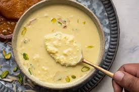

Rabdi

Ingredients:
- 1 liter full-fat milk
- 1/2 cup sugar
- 1/2 teaspoon cardamom powder
- 1 tablespoon chopped nuts (almonds, pistachios, cashews)
- 1 tablespoon chopped dried fruits (raisins)
Procedures:
- Pour the milk into a heavy-bottomed pan and bring it to a boil over medium heat, stirring occasionally to prevent it from sticking to the bottom of the pan.
- Reduce the heat to low and simmer the milk, stirring frequently, until it reduces to about half its original volume. This process can take 1 to 1.5 hours.
- Add sugar, cardamom powder, chopped nuts, and dried fruits to the reduced milk. Mix well.
- Continue to simmer the mixture for another 10-15 minutes, stirring occasionally, until it thickens to a rabdi consistency.
- Remove from heat and let it cool to room temperature. Rabdi can be served warm or chilled.
Comments: